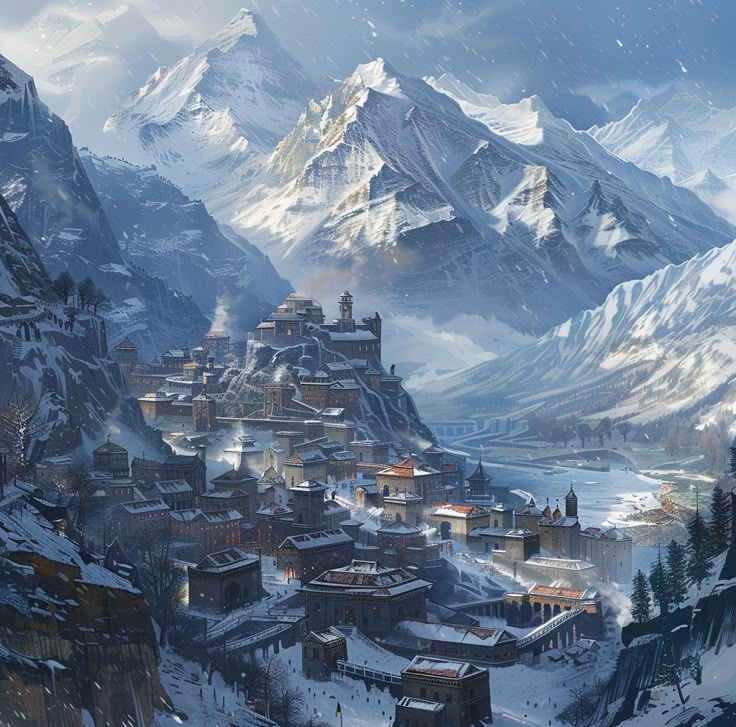
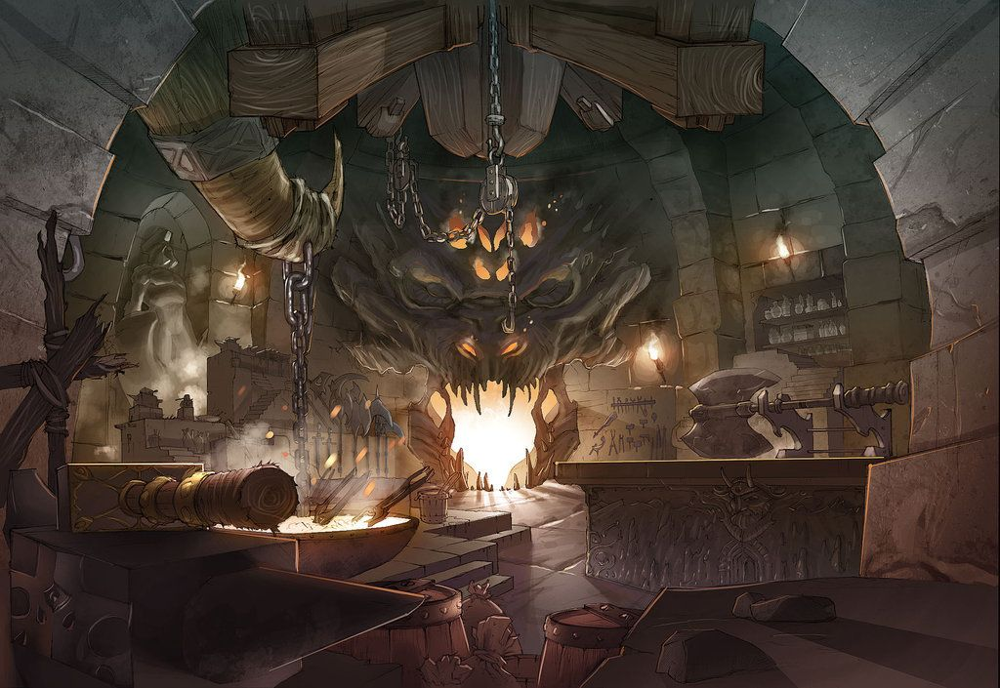
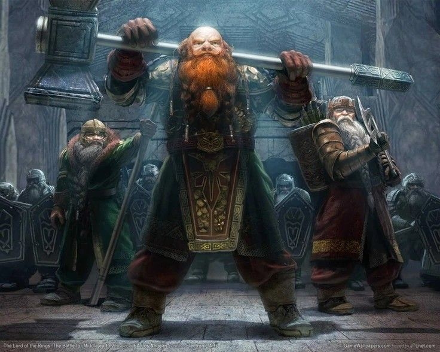
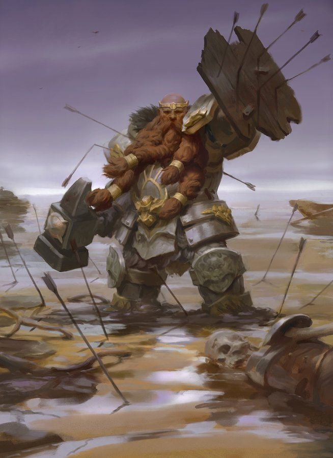

История Траина Углича
Глава первая: Детство и проклятая руна

✦ Дельстейн — суровый край, где родился Траин ✦
Траин родился в Дельстейне, в семье кузнеца Ульда Углича. Мать умерла при родах, отец растил его сурово, брат Балин — жестоко. Траин был тихим и слишком много думал. Это бесило брата. В детстве отец отправил Траина в часовню при старом храме — маленькую каменную церковь на окраине Карнхольма, где молились бедняки. Старая жрица, которую все звали просто Мать, учила детей читать, писать и молиться. Она никогда не называла имя своего бога. Траин пробыл там около года, полюбил тишину храма, но отец забрал его: «мальчику нужно учиться держать молот».
В двенадцать лет отец показал Траину нижнюю кузницу — тайную комнату с древними артефактами. Там лежал чёрный камень с руной в виде раздвоенной молнии. Руна была тёплой, шептала, светилась холодным синим. Траин тайком прикасался к ней. С того дня руна словно осталась с ним. Не на камне — внутри. Под кожей. В крови. Он чувствовал её, даже когда был далеко от подвала. Балин узнал, ударил Траина, назвал колдуном и слабаком. С тех пор братья стали чужими.

✦ Тайная кузница отца — чёрный камень с древней руной ✦
Отец умер, когда Траину было пятнадцать. Сердце. Прямо у горна. Балин обвинил Траина в проклятии. Кредиторы забрали кузницу. Братья остались на улице. Они попробовали работать наёмниками, но в первой же вылазке Балин избил должника до полусмерти. Траин попытался остановить брата. Балин сказал: «Ты слабак. Иди сдохни в чужих землях». Траин не ударил в ответ. Разжал кулак и ушёл в снегопад. До сих пор не знает — это была сила или слабость.
Глава вторая: Двадцать лет в ордене

✦ Воинский орден Дельстейна — старый, дисциплинированный ✦
Траин не стал скитаться один. Он вступил в один из воинских орденов Дельстейна. Название того ордена он почти забыл — слишком много воды утекло, слишком много крови. Помнит только, что орден был старым, дисциплинированным и не задавал лишних вопросов. Этот орден славился своей суровой школой: железная дисциплина, недельные переходы по снегам, боевые гимны, что пели у костров перед битвой.

✦ Один из воинов ордена — сталь и суровость ✦
Траин провёл там почти двадцать лет. Сражался. Поднимался по рангу. Учил новобранцев. Носил чужой символ на груди и делал чужую работу. Он никогда не верил в идеалы ордена — в Дельстейне не верят в идеалы, там верят в сталь и приказы. Но орден дал ему крышу над головой, еду и смысл. Траин платил верностью. А потом что-то случилось. В ордене произошёл раскол. Траин оказался между двумя сторонами. Он ушёл. Не с позором — с тяжёлым сердцем.
Глава третья: Таррах Мор · Глас пустоши
После ухода из ордена Траин прибился к торговому каравану, который шёл через Таррах Мор в Соларнтир. Ему было уже под сорок. На четвёртую ночь караван уничтожили тени из пустоши. Траин остался единственным живым. Он лежал среди трупов и умирал. И тогда он услышал голос. Не ушами — где-то внутри. Голос сказал: «Встань. Ещё не время». Он встал. Рана затянулась. Руна внутри проснулась по-настоящему.
Он шёл три дня без еды и воды. Вышел к воротам Соларнтира, рухнул у стены. Ему было сорок два. Стража бросила ему хлеб, как собаке. Он попал в Соларнтир и просто остался там.
Глава четвёртая: Пёс Соларнтира
Он попытался работать — его никуда не брали. Он украл хлеб. Судья дал выбор: тюрьма с «очищением болью» или служба. Траин выбрал службу. Пять лет он уже носит нашивку Соларнтира, выполняет приказы и ненавидит этот город. Ему сорок семь. Руна внутри живёт своей жизнью. Иногда молчит неделями. Иногда пульсирует так, что кости растут. Он слишком стар, чтобы бояться. И слишком устал, чтобы искать ответы.
Глава пятая: Тень ордена «Последний Глас»
В дорожных пыльных архивах Соларнтира он наткнулся на старое досье об Ордене «Последний Глас Берсерка». Тридцать тысяч мечей, сражавшихся против Падижего Магнуса. Их бог — Алый Аргентум. Символ — капля крови в ореоле огня. Траина зацепило название. «Последний Глас». Как тот голос, сказавший «Встань».
«Я не знаю, звал ли меня тот голос. Но если есть хоть искра связи — я докопаюсь до правды».
Страх, что гложет изнутри
Траин боится не смерти. Смерть была бы даже облегчением. Он боится потерять последнюю искру своей воли — превратиться в бессловесное орудие, в цепного пса, который забыл, зачем он дышит. Он боится, что руна внутри однажды поглотит его разум, оставив лишь жажду разрушения. Боится предать себя снова, как тогда, когда ушёл из ордена с тяжёлым сердцем, так и не поняв — был ли он трусом или честным перед самим собой.
«Я не боюсь удара мечом. Я боюсь проснуться и не узнать своё лицо в зеркале. Боюсь, что однажды руна заговорит вместо меня».
Цели, что ведут вперёд
- Обрести ответ — узнать природу голоса, сказавшего «Встань». Понять, был ли это бог, дух или всего лишь умирающий мозг.
- Вернуть себе имя — перестать быть «псом Соларнтира». Заработать или отнять свободу, чтобы смотреть в глаза без стыда.
- Принять руну — либо научиться управлять её силой, либо найти способ усыпить её, прежде чем она сломает его.
- Не умереть никем — оставить след, пусть даже в виде выжженной руны на камне, чтобы кто-то вспомнил: Траин Углич существовал не только для приказов.
«Больше всего я боюсь однажды проснуться и понять, что стал тем, кого презирал — слепым исполнителем без чести и памяти. Руна внутри — это не дар и не проклятие. Это экзамен. И я ещё не знаю, сдам ли его».